Serie schilderijen over het opgroeien van mijn dochter; een work in progress vanaf 2000.
Voor meer info en filmpjes kijk dan in hoofdstuk zes van project In Tussentijd
Students, olieverf op paneel, 21,5cm x 25,5cm, 2020

Speechless, olieverf op karton, 121cm x 200cm, 2017

Pauze, olieverf op paneel, 22,5cm x 22,5cm, 2017
Z.T. Olieverf op paneel, 26cm x 20cm, 2017

In dialoog, olieverf op paneel, 22,5cm x 22,5cm, 2017
Student, olieverf op paneel, 26cm x 20cm, 2017
Schermer, olieverf op paneel, 25,5 cm x 29,5cm, 2015
Schermen, 23cm x 15cm, olieverf op paneel, 2017
Gala, olieverf op paneel, 2016

Schiphol, olieverf op paneel, 26 cm x 35 cm, 2016

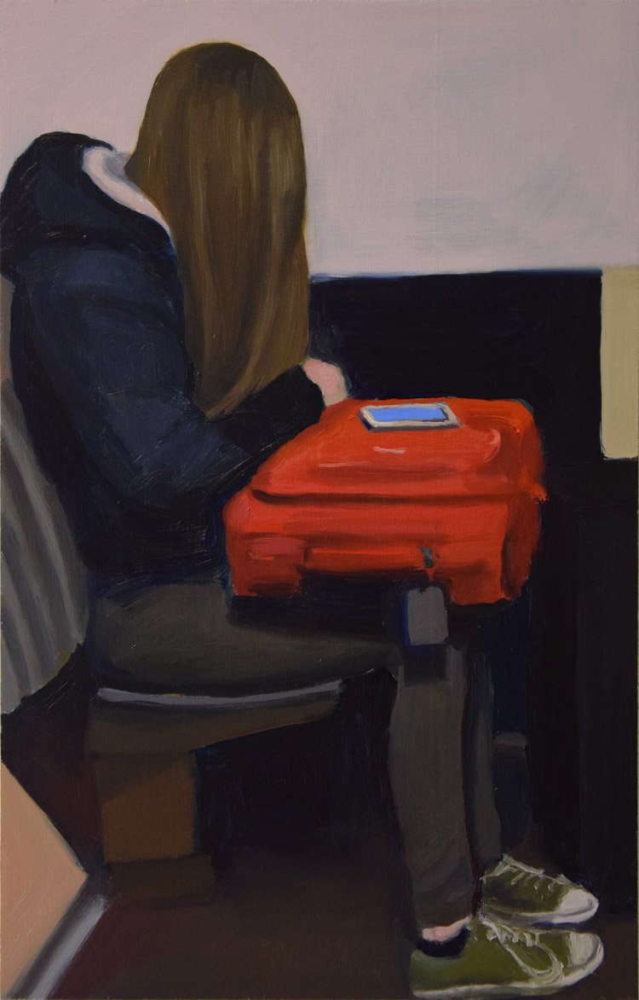
'In tussentijd', olieverf op paneel, 2016
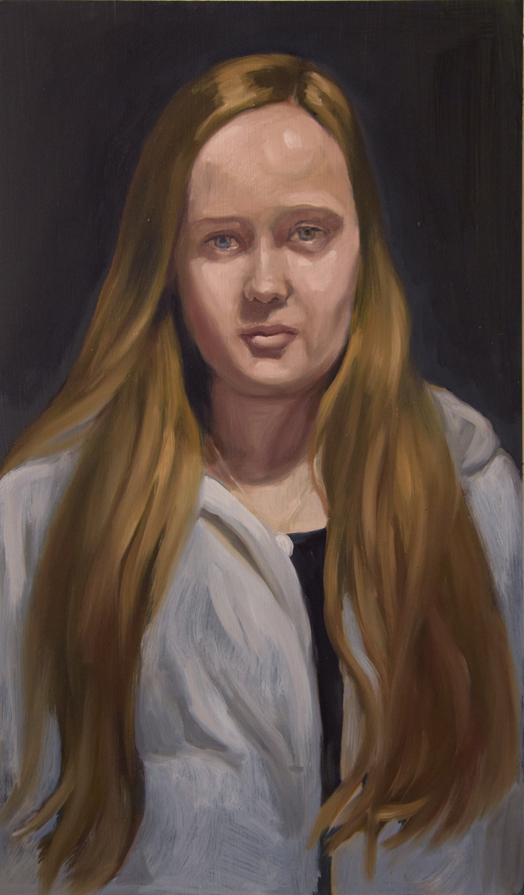
15,5, olieverf op paneel, 2016

15, olieverf op paneel, 2015

Aan het raam, olieverf op paneel, 28,5 cm x 25 cm, 2015

Z.T. olieverf op paneel, 2015

Z.t. olieverf op paneel 25cm x 16,5cm, 2014

Puck in grijs. olie/paneel, 24cm x 30cm, 2013

Z.t. olieverf op paneel, 43cm x 21,5cm, 2013

Z.T. olie/paneel, 30cm x 24cm, 2013

Masker. olieverf op paneel, 24x 30cm, 2013

Terugkijkend. olieverf op paneel, 39,5 x 16cm, 2014
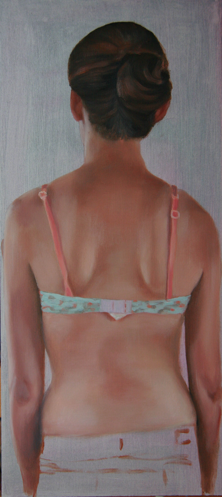
'Rug', olie/paneel, 55,5cm x 20cm, 2013

'Terugkijken',olie/paneel, 47x24cm,2013

'Rug', olieverf op paneel, 2005
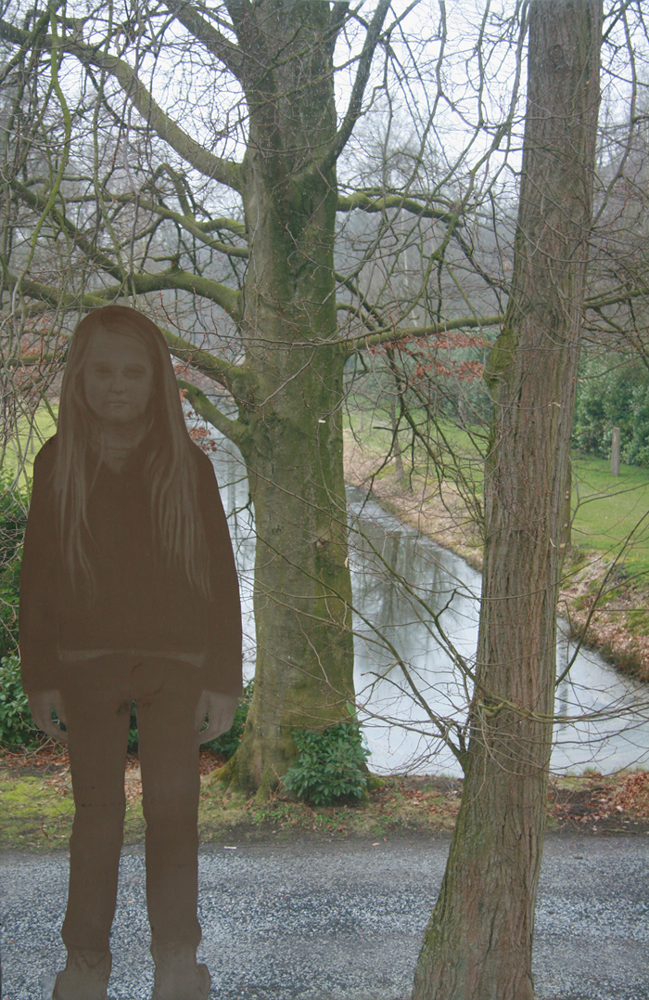 
Werkperiode bij gastatelier (kloosterhotel) ZIN in Vught. Puck voor raam. Houtskool op papier op raam. 2009

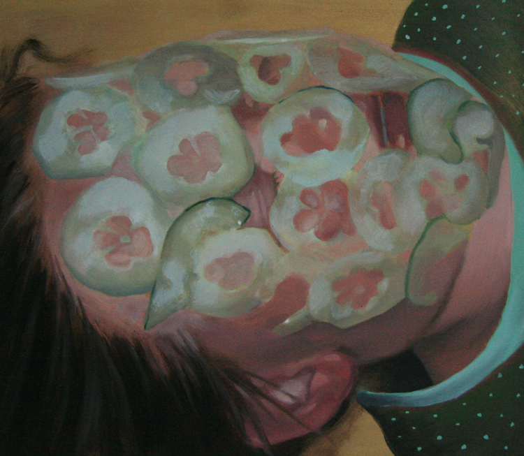
Komkommertijd.olieverf op paneel, 36 cm x 41cm, 2010
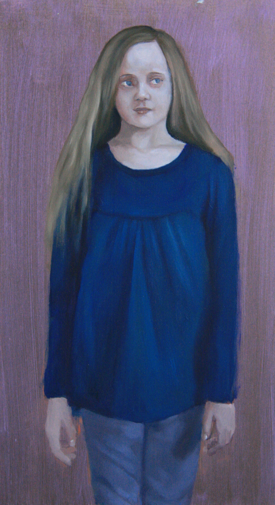
Z.t. olieverf op paneel, 46cm x 25,5cm, 2010
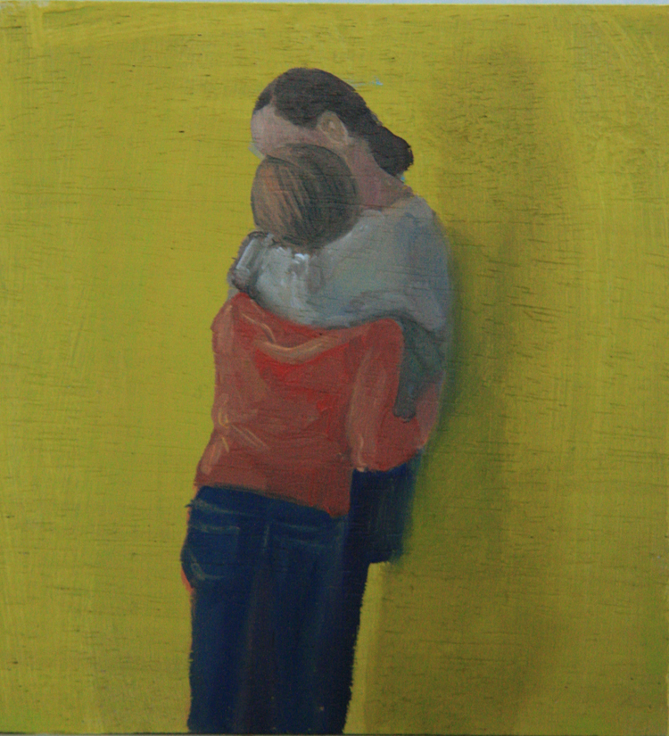
Z.t. olieverf op houten blokje, 10cm x 10cm, 2010
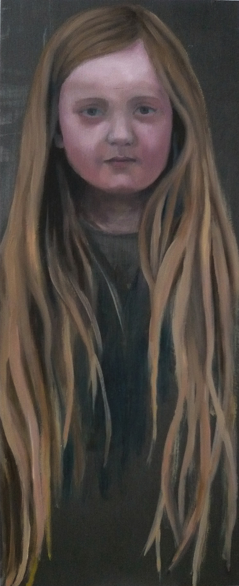
Z.t. olieverf op paneel, 2009

Z.t. olieverf op paneel, 40cm x 50cm, 2010
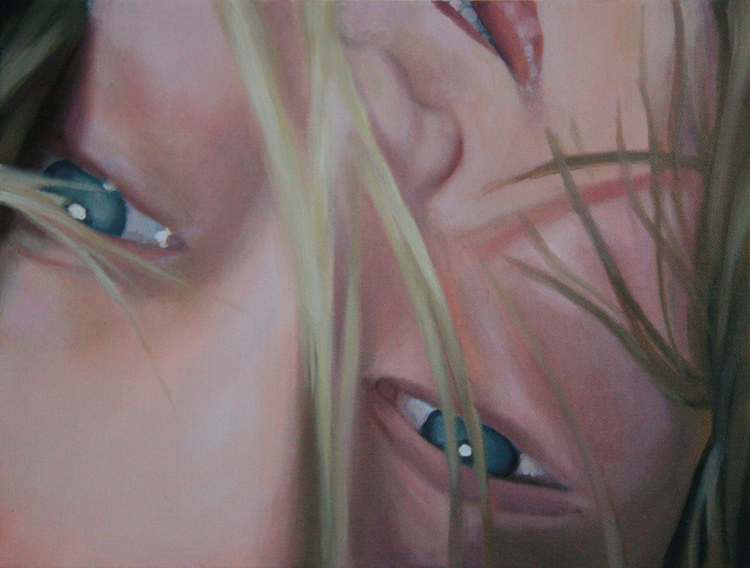
Op zijn kop. olieverf op doek, 40cm x 50xm, 2010
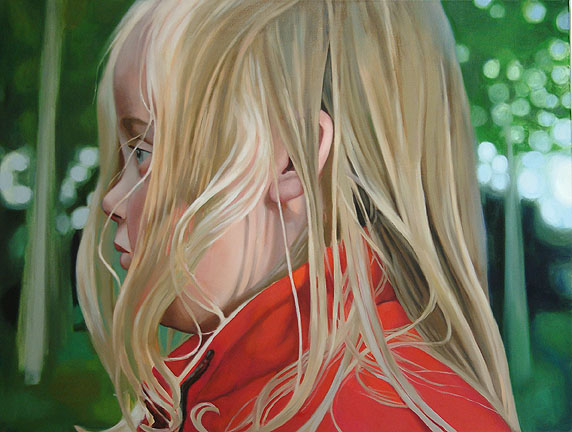
Z.t. olieverf op doek, 80cm x 100cm, 2005
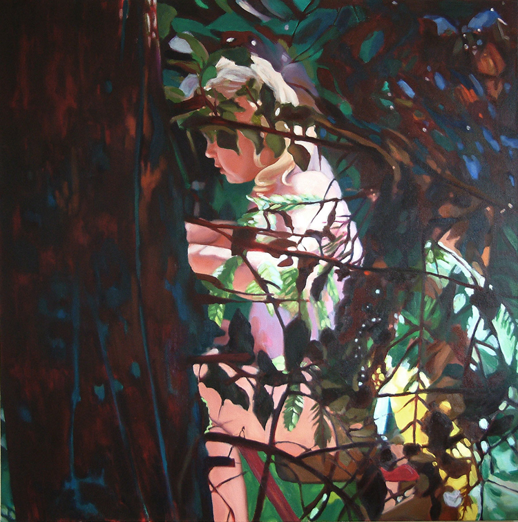
Distelloo, olieverf op doek, 100cm x 100cm, 2005
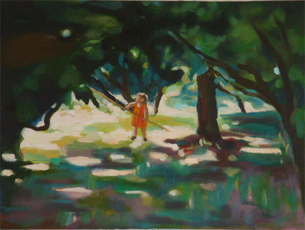
Alice in wonderland, olieverf op doek, 2004
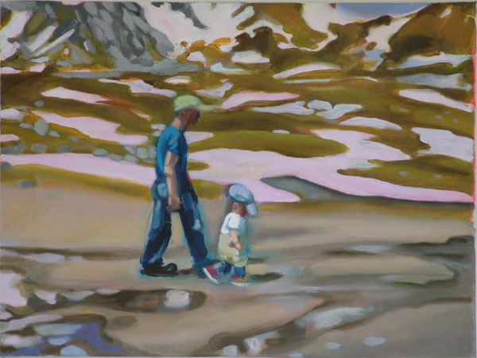
Keep on walking, olieverf op doek, 30cm x 40cm, 2004
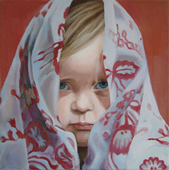 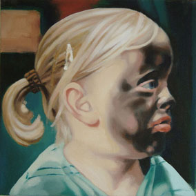
Z.t. olieverf op doek, 30cm x 30cm, 2003 Piet Puck, olieverf op doek, 30cm x 30cm, 2003
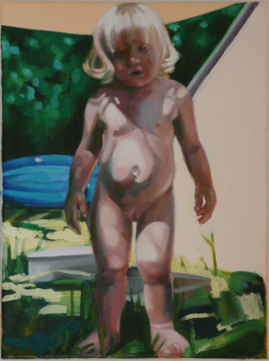
Z.t. olieverf op doek, 30cm x 40cm, 2003
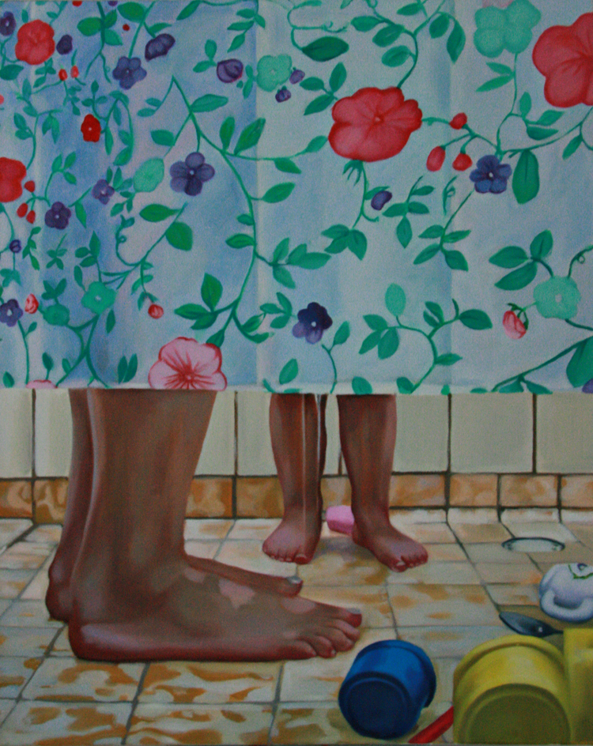
Z.t. olieverf op doek, 80 cm x 100cm, 2004
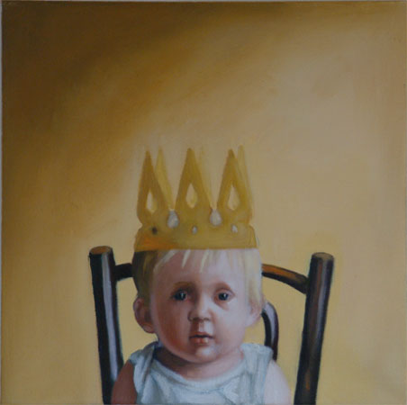
Eén, olieverf op doek, 40cm x 40cm, 2001
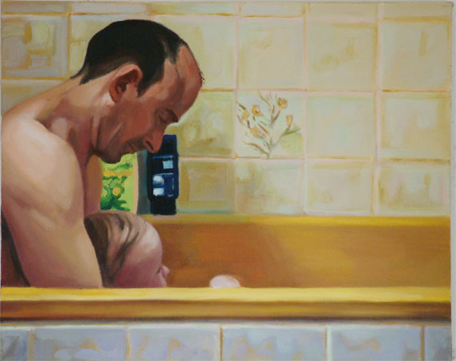
Wish I was Bonnard, olieverf op doek, 40cm x 50cm, 2001
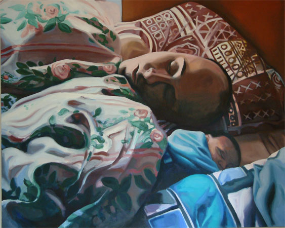
Z.t. olieverf op doek, 130cm x 160cm, 2001
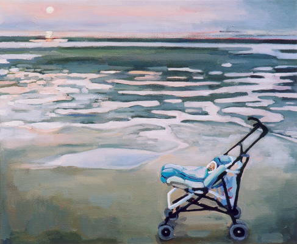
Puck on the beach, olieverf op doek, 50cm x 60cm, 2001

Puck van Dorothé, olieverf op doek, 40cm x 50cm, 2001